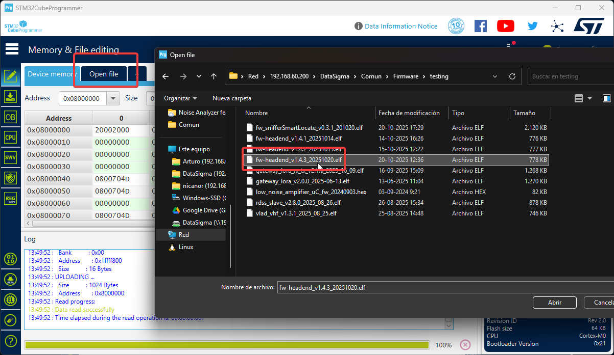
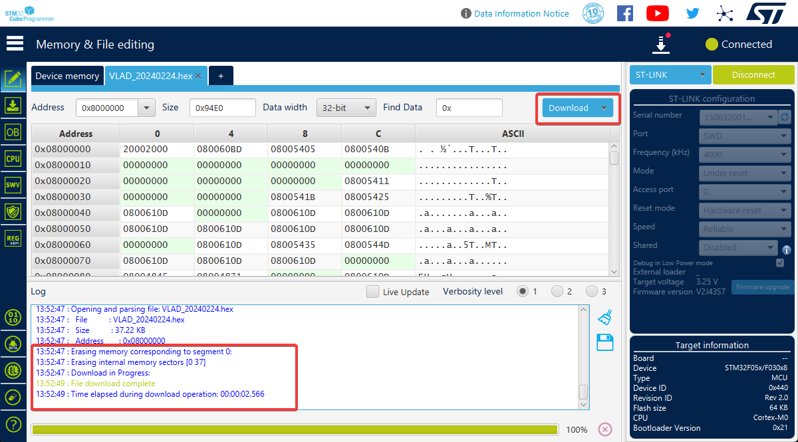

Ensure you have the following components before starting:
STM32CubeProgrammer Software (latest version)
ST-LINK/V2 Debugger or compatible interface
USB Cable for debugger connection
Target STM32 Device to be programmed
Firmware File (.hex, .bin, or .elf format)
SWD/JTAG connection cables
Proper power supply (3.3V or 5V)
2
STM32CubeProgrammer Installation
Download and install STM32CubeProgrammer from STMicroelectronics. The package includes all necessary drivers for programming STM32 microcontrollers.
📦 Installation Package
The installer is included with this documentation. Run it with administrator privileges and restart your computer after installation to load USB drivers properly.
System Requirements: Windows 7/8/10/11 (64-bit), 2GB RAM, 500MB disk space, USB 2.0 port.
3
Hardware Setup - Debugger Connection
Connect your ST-LINK debugger to the target STM32 device. Proper hardware connection is critical for successful programming.
⚠ Critical Requirement
A dedicated programmer/debugger is mandatory. Ensure proper SWDIO, SWCLK, GND, and VCC pin connections. Incorrect wiring may damage hardware.
Click "Connect" to establish communication. The software will detect the device and display information (part number, flash size, firmware status).
⚠ Troubleshooting
If connection fails: verify hardware connections, check power, confirm correct interface selection, ensure no other software is using the debugger, verify drivers are installed.
7
Load Firmware File
Click int "Open File" and to select your firmware binary (.hex, .bin, or .elf).
📄 File Validation
Verify the firmware matches your exact STM32 part number. Check file size doesn't exceed device flash memory.

8
Program & Verify Firmware
Click "Download" to begin firmware transfer. The software will erase flash sectors, program new firmware, verify data, and display completion status.
Options: Verify after programming (recommended) • Run after programming • Full chip erase (for production)

✓ Programming Completed Successfully
Firmware successfully written and verified. Disconnect the programmer and power-cycle the device to run the new firmware.